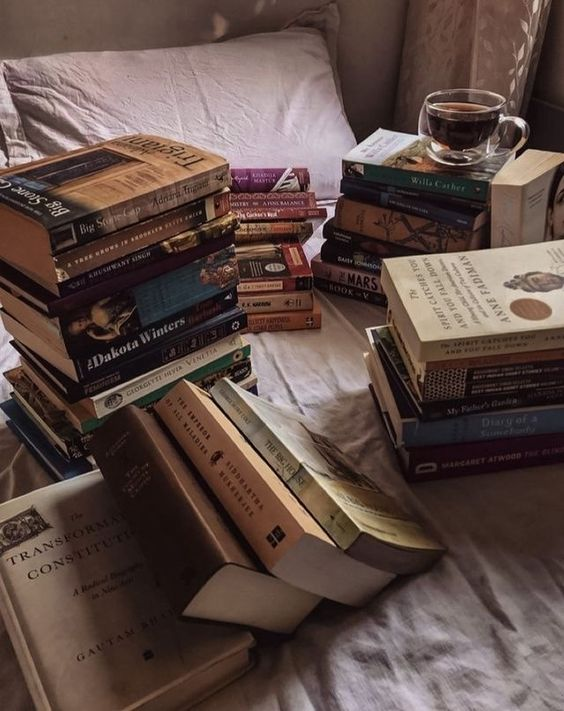

A reader lives a thousand lives before she dies.
"When I look back, I am so impressed again with the life-giving power of literature. If I were a young person today, trying to gain a sense of myself in the world, I would do that again by reading, just as I did when I was young." – Maya Angelou
"It wasn't until I started reading and found books they wouldn't let us read in school that I discovered you could be insane and happy and have a good life without being like everybody else." – John Waters
